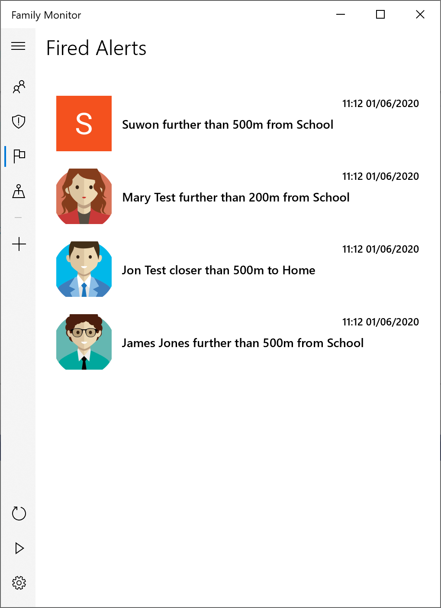
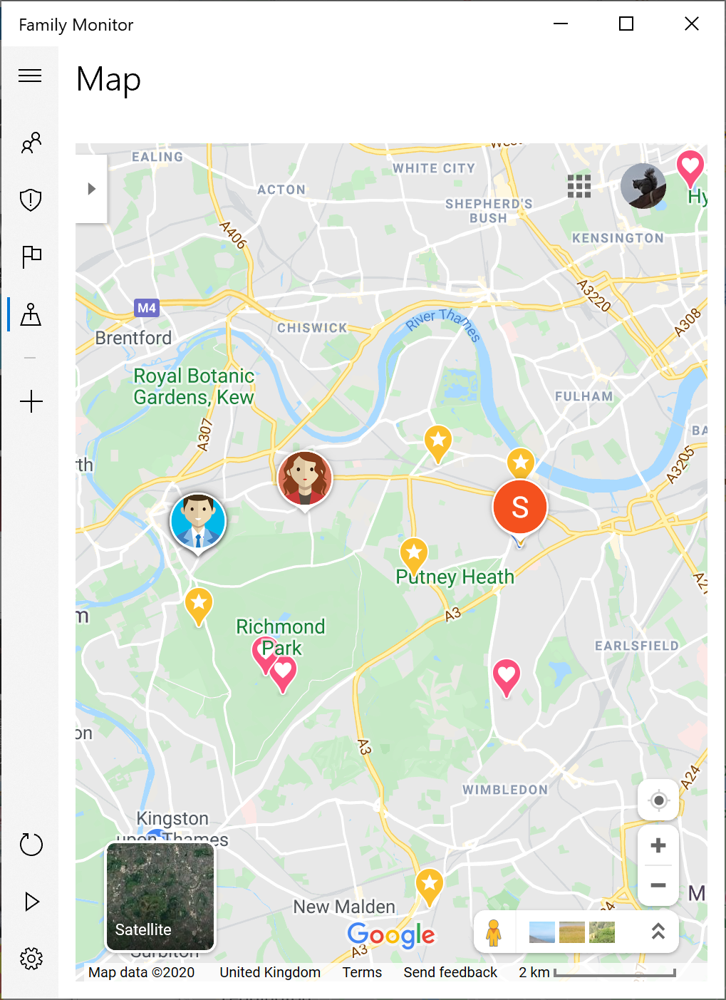
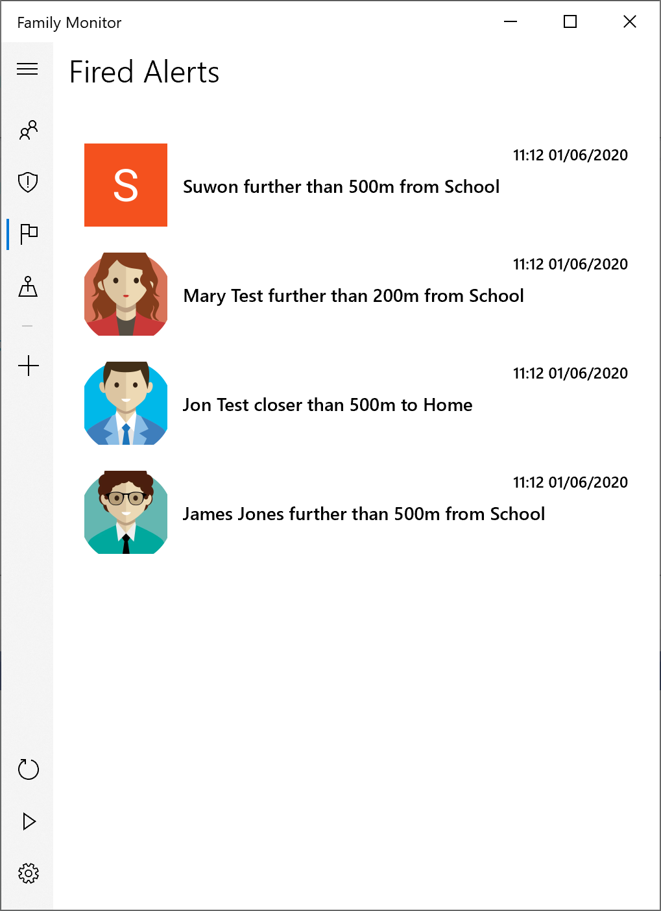
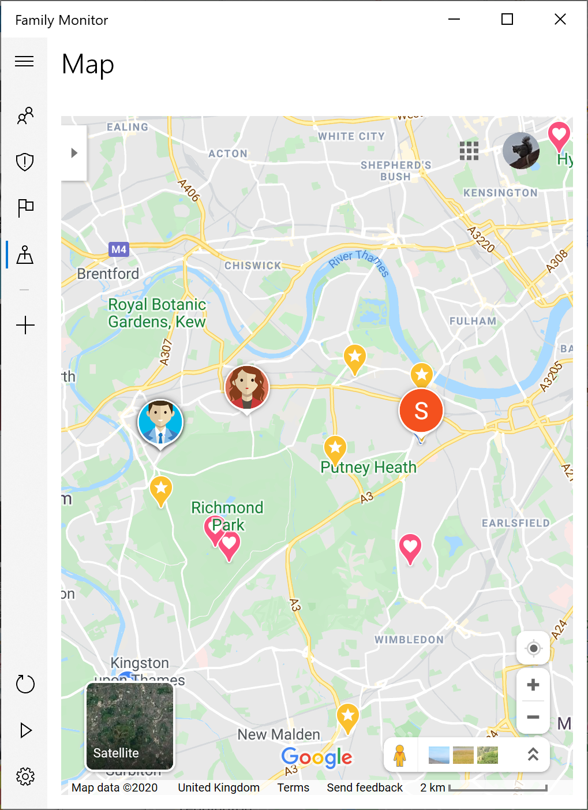

FAQ
- Change Google account - Tap the Logout button within Settings.
Family Monitor is a very simple app that works alongside Google Maps. To start (i.e. before using the Family Monitor app), ask your family to allow Google Maps to share their locations with you. (See here for instructions).
Then, within Family Monitor, define locations that you will use when setting alerts, for example, your home and your children's school. (See here for instructions). Once the locations have been defined, you can create alerts in the form of:
Note that you refer to yourself as Me. And that's it!

 



Click a family member to view their location on the Map tab.
Right click an alert to delete, edit, reset or share it. Click an alert to view the object of the alert's location on the Map tab.
Right click a fired alert to delete it. Click a fired alert to view the object of the alert's location on the Map tab.
A browser view of Google Maps. Tapping on a family member or an alert, on the corresponding tabs, will bring you to this tab to show the relevant location.
This tab is also used to define locations that are to be used in Alerts:
The following can be found on the settings page which is accessible via the cog button.
How frequently to request an update of your family's locations from Google. A value lower than every two minutes is not possible.
Whether to automatically reset an alert. For example, if an alert is set to fire when James is closer than 100m from home:
How long to wait before resetting the alert. In the above example, the Alert Reset Period is, at step 2, how long James has to be further than 100m from home before the alert auto resets.
Whether the metric or imperial system should be used.
Family Monitor does not ask for, process or store any personal information apart from the names of the family members associated with alerts that the user creates. These alerts are only stored on the device running Family Monitor. In addition, the only network communication is to addresses (URLs) within the Google.com domain and to cyferorg.github.io when displaying this help page.
Note that for earlier versions of Family Monitor, the Google Maps configuration required two steps. There is now only one step since Google's Location Bookmarks are no longer used.
Family Monitor now only requires Google Maps' Location Sharing to be enabled. (The following screenshots are from the Android version of the Google Maps app but the iOS version is very similar.)